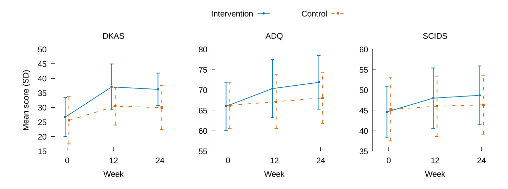
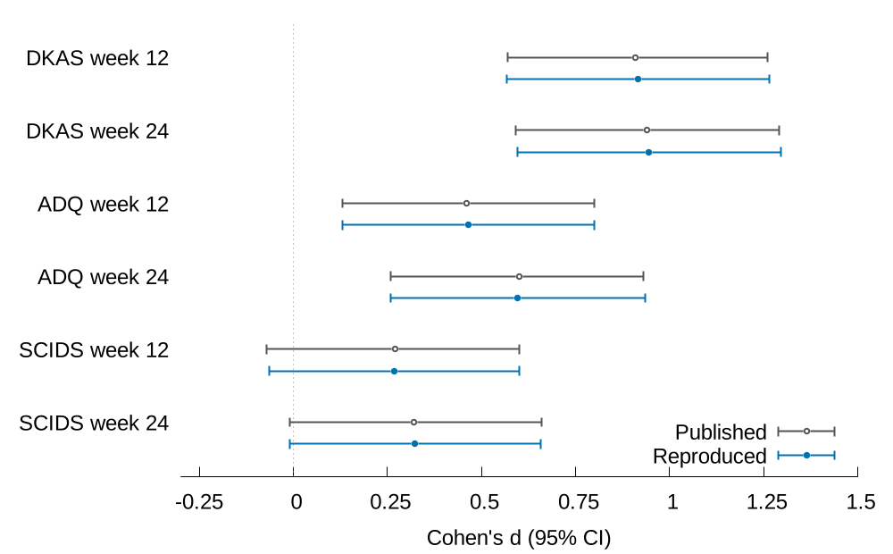

用 Word 寫論文，數字是從統計軟體抄進去的。這條流程裡，論文沒有一個結果數字是手打的：程式算好、取一個名字（代號），論文裡只寫代號，排版時才換成數字。下面跟著「介入組第 12 週的知識分數平均」走一次。
-
1source/data/study_data.csv原料
一列一個人。
dkas_t1是第 12 週的知識分數（0–50）。程式只讀這個檔，不改它。id group dkas_t1 I001 intervention 37 I002 intervention 44 I003 intervention 43 … I048 intervention 12 …（介入組共 70 人） -
2source/scripts/analyze.py原料（程式）
分析程式算介入組
dkas_t1的平均，照 SPSS、Excel 的方式四捨五入到小數兩位，再給這個數字取名叫DKASIntTOneMean（DKAS、介入組 Int、第 12 週 TOne、平均 Mean）。# 排除名單：老師決定，寫在程式最上面 EXCLUDE_IDS = [] # 每個量表、每一組、每個時間點，都算平均並取名 macros[f"{scale}{gk}{tname}Mean"] = fmt(s.mean(), 2) -
3output/numbers.tex成品
程式把每個數字寫成一行：代號＝數字。這個檔每次 build 都重做，不要手改。
\newcommand{\NTotal}{140} \newcommand{\DKASIntTOneMean}{37.04} \newcommand{\DKASTOneD}{0.92} -
4source/paper/main.tex原料（論文本文）
論文本文裡寫的是代號，不是數字。換資料時，這一句一個字都不用改。
At week 12, DKAS scores were \DKASIntTOneMean{} in the intervention group and \DKASCtlTOneMean{} in the control group (\DKASTOnePstat{})… -
5output/main.pdf成品
排版時，LaTeX 把代號換成
numbers.tex裡的數字。你看到的論文長這樣：At week 12, DKAS scores were 37.04 in the intervention group and 30.43 in the control group (p < 0.001)…
按上面的「排除 I048」，看哪些數字一起變
- 現在用的是全部 140 人，數字跟論文對得上。
數字會自動更新，句子的解讀不會。例如排除一個人之後，Discussion 裡「結果跟論文對得上」那句就不再成立：數字變了，用到它的句子要你重讀一次。
畫得出
程式做小表，gnuplot 照表畫圖
圖也一樣不是手畫的。分析程式先把畫圖要的數字整理成一張小表，gnuplot 腳本讀這張表、照腳本的指示畫出來。資料變了，表跟著變，圖也跟著重畫。
① 小表 output/figdata/fig1_dkas.csv（Excel 打得開）
| time | int_mean | int_sd | ctl_mean | ctl_sd |
|---|---|---|---|---|
| 0（前測） | 26.686 | 6.719 | 25.543 | 8.140 |
| 1（第 12 週） | 37.043 | 7.930 | 30.429 | 6.439 |
| 2（第 24 週） | 36.200 | 5.550 | 29.943 | 7.539 |
int＝介入組、ctl＝對照組；mean＝平均、sd＝標準差。這張小表跟著第 01 段的「資料」切換一起變。
② 腳本 source/gnuplot/fig1_outcomes.gp：每一行在做什麼
set terminal cairolatex pdf size 12cm,6cm畫成 12 公分寬（論文版面的寬度）。圖上的字交給 LaTeX 排，跟內文同一套字型；放大也不會糊。set output 'figures/fig1.tex'畫好存到 output/figures/。Word 版另外存一份 PNG。set datafile separator comma小表是 CSV，用逗號分欄。set style line 1 lc rgb '#0072B2' lw 2 pt 7介入組：藍色實線、圓點。藍和橘是色盲也分得出來的配色。set xtics ('0' 0, '12' 1, '24' 2)橫軸的三個點標成第 0、12、24 週。set autoscale y縱軸範圍跟著資料走。換資料不會把點切掉。set multiplot layout 1,3一張圖裡並排三張小圖：DKAS、ADQ、SCIDS。plot 'figdata/fig1_dkas.csv' every ::1 using ($1-0.04):2:3 with yerrorlines ls 1讀小表，跳過第一列欄名；第 1 欄當橫軸，第 2 欄（平均）當縱軸，第 3 欄（標準差）畫成誤差線。'' every ::1 using ($1+0.04):4:5 with yerrorlines ls 2同一張表的第 4、5 欄是對照組；往右挪一點，兩組的誤差線才不會疊在一起。這些你不用背，也不用自己寫：跟 AI 說要什麼圖，它會改腳本。看得懂每一行在做什麼，就能檢查它改得對不對。
③ 畫出來的圖 output/figures/fig1

同一張小表，用折線畫。藍色實線是介入組，橘色虛線是對照組；誤差線是標準差。
分得開
原料放 source，成品在 output
source/ 原料：要改，就改這裡
- data/
- 研究資料（CSV）。你放，AI 只讀
- refs/
- 書目 refs.bib，Zotero 自動匯出
- scripts/
- 分析程式 analyze.py，AI 改
- gnuplot/
- 畫圖腳本，一張圖一個，AI 改
- paper/
- 論文本文 main.tex，AI 寫
build
output/ 成品：不要手改
- numbers.tex
- 內文數字，一個數字一個代號
- tables/
- 表：.tex 進 PDF，.csv 給 Excel
- figdata/
- 畫圖用的小表（CSV）
- figures/
- gnuplot 畫好的圖
- main.pdf
- 論文：你要看的就是這個
要改結果，改 source；output 不用顧，跟 AI 說「再跑一次 build」就會重新長出來。
為什麼要分開：原料是你的研究，要好好保存；成品隨時能重做，所以不推上 GitHub，也不怕被改壞。真的研究資料能不能交給 AI、能不能推上 GitHub，先照主頁第 07 段〈研究倫理〉的四個條件確認；Private 本身不代表可以上傳。核對數字時，用 Excel 打開 output/tables 資料夾裡的 .csv 檔就好；看完關掉時按「不要儲存」。
動手做
你只跟 AI 說話，大約 30 分鐘
- 範本資料夾已經在電腦裡（資料夾名稱
ai-paper-kit；範本從哪裡拿，當天講師會說）。還沒有的話，照第三部分主頁第 04 段第 1 步。 - 工具裝好了：照主頁第 03 段那句話請 AI 幫你裝，AI 列出四個版本號、沒有「找不到」才算。
- 打開「看得到你電腦資料夾」的那一面 AI：ChatGPT 桌面版裡的 Codex，或 Claude 桌面版裡的 Code（第一部分設定課教過；網頁上的一般對話看不到你電腦裡的資料夾）。權限照第一部分設定：Codex 選「要求核准」，Claude 的 Code 選 Manual。
- 範本是用 ZIP 下載解壓縮的：報到之前先跟 AI 說「請先檢查這台電腦有沒有 git；有的話幫這個資料夾存一版（commit），存好告訴我」。存好了才做下面的報到。用 git 下載（clone）的不用做這步。
source/data/、上網：先別按，問它「這一步在做什麼」。一個練習可能會問好幾次，正常。下面是報到加六個練習再加收尾，共 8 步。每一步有三種標籤：「你自己做」是你動手的，「跟 AI 說」的框按「複製」貼給 AI，「你會看到」是做對時會出現的結果。做完打勾，進度只存在這台電腦的瀏覽器裡。想先看別人做一次，看第 05 段。
看得到
句子一字不改貼給 AI，它真的回了什麼
2026-10-22，我們用「不會寫程式、只用過 LINE 和 Word」的老師視角，把第 04 段的句子一字不改貼給 AI，從頭做到尾（報到那句後來加了「先確認 source/」，那一步另外實跑了一次；當時跑 build 的句子寫的是 python build.py，範本改用 uv 之後換成 uv run build.py，AI 回覆的內容一樣）。下面是 AI 真正回的話（摘錄；資料夾路徑用「…」代替）和每一步的白話說明。環境是 Windows、Codex 桌面版內附的 Codex，同一段對話做到底；9 次回覆 AI 一共花了大約 7 分半鐘。為了把過程自動錄下來，實跑時 AI 用的是「不問、直接做」的設定，所以紀錄裡看不到「可不可以」的確認；你的 AI 設成「要求核准」，會多跳出這些確認。這是當次的紀錄，AI 下次的說法、行號可能不一樣，照每一步「你要檢查」核對就好。（上一版的句子也用 Claude 做過一次，每一步一樣 BUILD OK。）
0報到約 20 秒
老師貼：請先讀 AGENTS.md 和 WORKFLOW.md，再跟我報到。今天是練習。開始前先確認 source/ 有沒有還沒存版的修改或新增檔；有的話先列給我、停下來。
領隊 · …\ai-paper-kit
已讀完 AGENTS.md、WORKFLOW.md、領隊規則及 team.md。source/ 沒有尚未存版的修改或新增檔。未設定 Git 遠端，無須 pull；目前未修改任何檔案。今天採單人練習模式：不寫紙條、不寫變更報告、不 commit。已準備好。
這是什麼意思：先看第一行的路徑是不是你打開的範本資料夾，再看它有沒有把練習規則講出來：這一行是報到的格式，內容還是要對。commit＝存一版；練習時不存，收尾才退得回去。「沒有遠端，無須 pull」代表這個資料夾還沒接上 GitHub，練習時不影響。
如果資料夾裡有你以前改過、還沒存版的檔（我們故意弄了一份測試），AI 會回：「source/ 有尚未存版的檔案：已修改 source/paper/main.tex；新增、尚未追蹤 source/data/我的筆記.csv。依你的指示停在這裡，未改檔、未 pull、未 build。」這時先別讓它刪或還原，那些可能是你的東西。
2跑一次 build33 秒
build 成功，最後一行是：BUILD OK pages=9 undefined_cites=0 undefined_refs=0 refs=7 refs_without_doi=0 bib_warnings=0。output/ 新增 28 個檔案（main.pdf 9 頁、numbers.tex、figdata/、figures/、tables/、latex-log/）……已在 workspace/log.md 記錄這次練習，沒有 commit。build 另提醒：論文中的 AI 使用聲明仍是範例文字。
這是什麼意思：「build」＝一次做完分析、畫圖、檢查文獻、編 PDF。最後一行是 BUILD OK 就成功；三個「要是 0」的都是 0。latex-log 是排版過程的紀錄，出錯時才要看。最後那個提醒是範本故意留的：寫自己的論文時，AI 使用聲明要改成你自己真的做過的事。
3追一個數字43 秒
37.04 是介入組第 12 週 DKAS 分數的平均值。資料欄位：study_data.csv 的 dkas_t1 欄，只取 group=intervention；計算位置：analyze.py 第 211 行；數字代號：numbers.tex 第 24 行 \DKASIntTOneMean；本文使用：main.tex 第 78 行，3.2 節第一句。我另外用 Python 重算介入組 70 筆 dkas_t1，得到 37.042857142857144，四捨五入後確實是 37.04。
這是什麼意思：「代號」就是數字的名字：論文裡寫名字，排版時才換成數字，所以資料一改，論文的數字跟著改。它還另外寫一小段程式重算平均，跟分析程式的結果核對。
4排除 I048102 秒
已將 analyze.py 第 33 行改成 EXCLUDE_IDS = ["I048"]，並完成 build。分析人數由 140 → 139，介入組由 70 → 69；原始資料未改動。……DKAS／第 12 週 37.04 → 37.41……摘要 Results：基線 p 值符合原文 8/8 → 3/8；結果 p 值符合原文 9/9 → 3/9……2.4 節：排除 1 人（I048），但理由仍顯示 [state the reason here]。
需要重讀的文字：摘要 Methods、2.3 節與表 2 圖說仍宣稱數值符合原文……Methods 也仍需填入您指定的排除理由：不符合收案條件。
這是什麼意思：你只改了「要排除誰」這一行，表、圖、摘要、內文全部自動重算。AI 主動列出「要重讀的句子」：數字會自己變，句子的意思要你重讀。[state the reason here] 是範本故意印出來的，提醒你補排除理由。
4改回來36 秒
已將 EXCLUDE_IDS 改回 []，並完成 build。分析人數恢復為 140 人，3.2 節的 DKAS 平均數恢復為 37.04。
5圖 1 改長條圖94 秒
已將圖 1 改成兩組並排長條，誤差線為平均值 ± 標準差。已檢視 PDF 第 6 頁，誤差線完整、圖例未遮住資料。只修改 fig1_outcomes.gp……另依練習規則更新紀錄、保留預覽圖，未 commit。
這是什麼意思：它自己打開 PDF 看過圖有沒有被切掉才回報。數字沒動，只換了畫法。它看圖時存的預覽圖放在 workspace/preview/，不影響論文。
6加一張表73 秒
已新增表 4，放入 Results 的 3.4 節。計算方式是先算每人第 12 週減前測，再計算各組平均值與樣本標準差。DKAS 介入組 10.36（6.38）、控制組（即對照組）4.89（8.62）……表說已註明：這是重建練習資料，改變量 SD 受前後測相關假設影響，不能代表原研究的改變變異。
這是什麼意思：程式加算、表格、論文段落一起長出來。它主動把限制寫進論文，這種句子你要留著。
7收尾：列清單17 秒
練習改過的 source/ 檔共有 3 個：fig1_outcomes.gp、analyze.py、main.tex。新增的 source/ 檔：無。EXCLUDE_IDS 已恢復為空清單。請確認是否將上述 3 個檔案用 git restore 還原。……收到確認後才執行。
這是什麼意思：它照你的話先列、不動手，等你點頭。git restore＝把檔案還原成上一次存的版本；練習期間沒有存版，還原回去就是練習前的樣子。
7收尾：確認還原28 秒
老師貼：確認，請還原。
已用 git restore 還原確認的 3 個檔案，source/ 已無修改或新增檔案。其他檔案未動，並已重新 build：BUILD OK pages=9 ……圖 1 已恢復折線圖，Results 新增的 3.4 節與表 4 已移除。
這是什麼意思：論文回到練習前。留下來的只有 workspace/log.md 的練習紀錄和 workspace/preview/ 的預覽圖，都不影響論文。
卡片左邊的數字對應第 04 段的練習編號（0＝報到、7＝收尾）。走一遍之後照實改了的地方（這頁已經是改好的）：Windows 版 gnuplot 會讓 PDF 編不出來（畫圖腳本加了一行）；用 winget 裝的 gnuplot 可能叫不動（範本 README 第三節的句子已改）；Excel 會把「3-6」這種類別顯示成日期（資料改寫成「3-6 h」）；Excel 或 PDF 閱讀器開著 output 裡的檔時 build 會當掉（現在會印出「先關掉…再跑一次」）；排除一個人時論文印出文法錯的句子（改成提醒你補理由）；上一版練習時 AI 會一直寫紙條、存版，收尾退不乾淨（加了「今天是練習」的規則）。
對得上
重算的數字，跟所長論文印的一樣嗎
範例論文把所長論文的三張表重算一次，逐一對照。這些比對結果本身，也是程式算出來、寫進論文的。對得上是預期中的事：t 檢定和效果量只看人數、平均和標準差，練習資料本來就是照論文的這些數字做的。這個對照示範的是：程式算出的數字，怎麼一格一格接回論文。它不是在審這篇論文，也不是重新驗證研究結果。
表 2 的 p 值
| 量表與時間 | 論文 | 重算 |
|---|---|---|
| DKAS 前測 | 0.367 | 0.367 |
| DKAS 第 12 週 | <0.001 | <0.001 |
| DKAS 第 24 週 | <0.001 | <0.001 |
| ADQ 前測 | 0.817 | 0.817 |
| ADQ 第 12 週 | 0.007 | 0.007 |
| ADQ 第 24 週 | 0.001 | 0.001 |
| SCIDS 前測 | 0.608 | 0.608 |
| SCIDS 第 12 週 | 0.115 | 0.115 |
| SCIDS 第 24 週 | 0.057 | 0.057 |
原論文表 4 的效果量 Cohen's d
| 量表與時間 | 論文 | 重算 |
|---|---|---|
| DKAS 第 12 週 | 0.91 | 0.92 |
| DKAS 第 24 週 | 0.94 | 0.95 |
| ADQ 第 12 週 | 0.46 | 0.47 |
| ADQ 第 24 週 | 0.60 | 0.60 |
| SCIDS 第 12 週 | 0.27 | 0.27 |
| SCIDS 第 24 週 | 0.32 | 0.32 |
綠色＝完全相同；淡黃底＝差 0.01，在四捨五入範圍內。

範例論文的圖 2：灰色空心是論文印的，藍色實心是重算的。這張也是 gnuplot 照小表 output/figdata/fig2_effects.csv 畫的。
寫得完
只給資料和文獻，AI 一步一步把論文寫出來
前面的練習是改一篇已經寫好的論文。這一段反過來：研究內容只靠三樣原料（另外 AI 也會看範本裡的規則、工具和收起來的範例程式）：練習資料（source/data/）、13 篇文獻的書目（material/模擬/refs.bib）和一份研究構想（material/模擬/研究構想.md）。老師一句一句說，AI 從開一篇新論文做到交稿前檢查，最後把原本的範例放回去。
2026-10-22，我們在範本的複本裡實跑一次（你手上那份範本沒有被動到）。AI 是 Claude（在雲端跑的 Claude Code），照下面十句話做，每一步錄下老師說的話、AI 原樣的回覆、改了哪些檔、build 最後一行。十步全部 BUILD OK，PDF 頁數依序是 1 → 1 → 1 → 4 → 4 → 8 → 12 → 13 → 13 → 8（最後一步把原本的範例放回來，所以回到 8 頁）。十步 AI 大約用了 85 次工具（讀一個檔、跑一次程式都算一次；你的 AI 設成「要求核准」的話，會問你好幾十次）。實跑時另外先給 AI 一段開場說明：扮演老師身邊的 AI 助手、這次會錄下來做成教材、照 AGENTS.md 的規矩做，並交代「這次模擬不用紙條，直接做」（研究模擬不是練習，所以用這句，不用「今天是練習」）。這是 10/22 上午用當時的範本跑的：之後範本改了 Fisher 檢定的算法、文獻回報要附摘要原句、AI 聲明的提醒、資料不再複製進 examples/，你現在照做，第 3、6、7 步的過程和頁數可能跟紀錄不一樣。下面引號裡是 AI 的原話（摘錄，資料夾路徑用「…」代替）。
想自己跑一次：照範本 README 第五節，十句話都在那裡。
0開工、開一篇新論文BUILD OK・1 頁
老師說：
我們來做研究模擬：只給資料和文獻，請你一步一步把論文寫出來。先執行 uv run tools/new_paper.py --keep-data --refs material/模擬/refs.bib --name 所長論文重算，把範例收進 examples/、開一篇新論文；再跑一次 build，告訴我最後一行。
AI 做了什麼：先讀了 AGENTS.md、WORKFLOW.md，用單人模式。執行 new_paper.py（開新論文的小工具）：原本的範例整份收進 examples/所長論文重算/（examples＝收起來的舊論文，隨時能打開參考；那次的工具連資料一起收，模擬後已改成資料檔一律留在 source/data/、不複製）；新的 source/ 留著練習資料，書目換成模擬用的 13 篇，分析程式只算人數，論文只有各節標題。
PDF 編出來了、只有 1 頁（骨架而已）；書目有 13 篇，都有 DOI、沒有缺欄位；論文還沒引用任何一篇……分析程式目前只算了人數：N = 140。BUILD OK pages=1 undefined_cites=0 undefined_refs=0 refs=13 refs_without_doi=0 bib_warnings=0
你要看什麼：最後一行是 BUILD OK，refs=13 代表書目換成模擬用的 13 篇了。原本的範例沒有被刪，收在 examples/所長論文重算/，第 9 步會放回來。
1先讀懂原料沒改檔・1 頁
老師說：
請讀 material/模擬/研究構想.md、source/data/README.md 和 source/refs/refs.bib，告訴我：資料有幾筆、有哪些欄位、書目有幾篇、每一篇一句話講它在做什麼（只能根據摘要）。先不要改任何檔。
AI 做了什麼：只讀、不改。回報資料 140 筆（介入組 70、對照組 70）、19 個欄位、沒有缺值；書目 13 篇（12 篇期刊論文、1 本書），每篇用一句話講它在做什麼，只根據摘要。它也說出哪兩篇沒有摘要（一篇是 GEE 的方法論文、一本是效果量的書），只能當「方法出處」引用，不能寫它們說了什麼；另外三篇摘要不完整。最重要的是它先舉手：
ADQ 量表在 refs.bib 裡沒有出處。……到第 5 步寫 Methods 時，ADQ 的英文全名和出處我會標「待老師補」，不會憑記憶寫。
你要看什麼：數字跟你知道的對不對得上（140 人、13 篇）。挑一兩篇，用 DOI 打開摘要，對 AI 那句一句話。先讓 AI 說它看懂了什麼，你才知道它等一下會怎麼寫。
2提分析計畫，等你同意沒改檔・1 頁
老師說：
請依研究構想提出分析計畫：表 1、表 2、表 3（GEE）各放什麼、用什麼檢定、效果量怎麼算、圖 1 怎麼畫，列出會產生的數字代號和檔名。先不要改，等我同意。
AI 做了什麼：只提計畫、不改檔；為了確認做得到，它在資料夾外面先試算過。表 1 比兩組的基本資料：類別變項（例如性別、婚姻）比兩組比例，檢定方法事先定好規則：每一格的期望人數都有 5 人以上，用卡方檢定；有一格不到 5 人，改用 Fisher 精確檢定（人數少時用的版本）；p < 0.20 的變項自動當作表 3 要調整的變項。表 2 每個時間點比兩組，算效果量 Cohen's d（兩組差了幾個標準差）。表 3 用 GEE（廣義估計方程式，分析同一個人量了好幾次的統計方法）看「組別 × 時間」。圖 1 怎麼畫、配什麼顏色、所有數字代號和檔名也都列出來。
規則先定，不看結果換檢定。
只有 2 家機構、以機構為單位分派：機構的影響跟組別完全分不開……這是設計本身的限制，我建議寫進限制，並請老師問統計顧問要不要另外處理。
你要看什麼：這是整個模擬最要緊的關卡：統計方法由你決定，不是 AI。看檢定規則是不是先定好；調整變項怎麼挑、人數少的類別怎麼併、沒做多重比較校正，這些不確定的，帶去問統計顧問。你點頭了，才回「同意」。
3做表 1～3BUILD OK・4 頁
老師說：
同意。請照計畫改 source/scripts/analyze.py，先做表 1、表 2、表 3，結果數字寫成代號，表同時輸出 .tex 和 .csv。在 main.tex 的 Results 放進三張表（先不用寫說明文字）。跑一次 build，告訴我最後一行，我會用 Excel 打開 output/tables/ 的 csv 核對。
AI 做了什麼：把分析程式從骨架改成完整的表 1～3，三張表放進論文。csv 存成 Excel 打開不會亂碼的格式。它另外寫一段不用 analyze.py 的程式，從資料重算幾個數字核對，例如 DKAS 第 12 週介入組 37.04、對照組 30.43，跟表上一樣。過程中它自己修掉兩個 build 不會擋的問題（SciPy 是 Python 的統計工具包）：
SciPy 的 Fisher 檢定，超過 2×2 時預設用亂數模擬，每跑一次 p 值都不一樣（婚姻的 p 在 0.617 到 0.628 之間跳）。這樣每次 build 數字都會變，所以我改成自己寫的「完整列舉」版本……結果每次都一樣（婚姻 0.624、在職訓練 0.098，跟原論文一樣）。
表 1 第一版太寬（超出版面 79 pt），我把列名縮短……BUILD OK pages=4 undefined_cites=0 undefined_refs=0 refs=13 refs_without_doi=0 bib_warnings=0
你要看什麼：用 Excel 打開 output/tables/ 的 table1～3.csv，挑幾格跟 PDF 的表對（只看，關掉時按「不要儲存」）。這次實跑 AI 沒有真的開 Excel，是另寫程式重算；你自己對過，才算你核對過，第 7 步的 AI 使用聲明會用到這一點。另外打開 PDF 看表有沒有超出版面：BUILD OK 不代表版面沒問題。
4畫圖 1BUILD OK・4 頁
老師說：
請畫圖 1：三個量表在三個時間點的平均和標準差，兩組各一條線。analyze.py 產生小表，source/gnuplot/ 寫一支腳本，main.tex 放進 Results。跑一次 build。
AI 做了什麼：分析程式多產生三張小表（output/figdata/fig1_dkas.csv 等），新增一支 gnuplot 腳本 fig1_means.gp（照收起來的範例腳本改），圖放進論文。它打開 PDF 看過點和誤差線沒被切掉、圖例沒蓋到資料。頁數還是 4 頁：圖跟表 2 排在同一頁。
圖上的點跟表 2 對得上：例如 DKAS 第 12 週介入組 37.04、對照組 30.43。
欄位號碼錯了 build 還是會 OK，只是畫錯資料，所以要打開 PDF 跟表 2 對。
你要看什麼：打開 PDF 的圖 1，挑一兩個點跟表 2 的平均對。圖說有沒有寫清楚誤差線是標準差。
5寫 Methods 和 ResultsBUILD OK・8 頁
老師說：
請依研究構想和 output/numbers.tex 起草 Methods 和 Results。數字一律用代號，表和圖都要在內文提到，Methods 的量表要引用 refs.bib 裡的出處。跑一次 build。
AI 做了什麼：Methods 寫了四小節（其中一段寫明這是重建的練習資料），Results 三小節，表 1～3、圖 1 都在內文提到。它用程式把 Methods、Results 裡直接打出來的數字全部列出來檢查：只剩 12 週、0–50 分這類設計上的固定值，沒有手打的結果。DKAS、SCIDS 兩個量表各引用一篇，回報時附上那篇摘要的原句。要老師補的地方，它印成紅字方括號，共 3 處：IRB 名稱和編號、課程內容和導師資格、ADQ 的全名和出處。它也列出「數字會自動更新、句子要重讀」的地方，在 main.tex 用註解標出來。
研究構想沒寫 ADQ 的英文全名；範例 main.tex 有寫，但 refs.bib 沒有出處，所以照規矩標紅字，不從範例或記憶補。BUILD OK pages=8 undefined_cites=0 undefined_refs=0 refs=13 refs_without_doi=0 bib_warnings=0
你要看什麼：PDF 裡的紅字＝AI 不知道、也不該自己編的東西，要你補；交稿前要全部清掉，build 不會檢查紅字。挑一句 Results 跟表 2 對。AI 列的「要重讀的句子」清單留著，換成真資料時用得到。
6寫 Introduction 和 DiscussionBUILD OK・12 頁
老師說：
請用 refs.bib 的文獻起草 Introduction 和 Discussion。每一句講到文獻的，只寫該篇摘要真的有寫的內容；回報時列出每一句根據哪一篇。結論說到多強，先在回報裡列兩三種寫法給我選，論文裡先用最保守的。跑一次 build。
AI 做了什麼：起草 Introduction、Discussion（含研究限制）和結論，13 篇用了 12 篇（沒用的那篇等老師決定）。回報列出 16 句講到文獻的句子，每一句附上那篇摘要的原句。結論給了三種強度 A、B、C，論文裡先用最保守的 A。
初稿有 5 句寫得比摘要多，build 抓不到，是我逐句對摘要時改的……Mole2019 原本寫成「受訪者說自己需要訓練」，其實那是作者的結論，改成「the authors concluded」。BUILD OK pages=12 undefined_cites=0 undefined_refs=0 refs=13 refs_without_doi=0 bib_warnings=0
你要看什麼：抽查兩三句講到文獻的句子：用 DOI 打開那篇的摘要，對 AI 附的原句，確認論文那句沒有說得比摘要多。undefined_cites=0 只代表引用的代號存在，不代表內容對。結論要說到多強，A、B、C 由你選。
7標題、摘要、兩份聲明BUILD OK・13 頁
老師說：
請寫標題、結構式摘要（250 個英文單字以內）、關鍵字，補上 AI 使用聲明和資料可得性聲明：要寫清楚這是重建的練習資料、不能投稿。跑一次 build。
AI 做了什麼：標題直接寫出「reconstructed practice data」，第一頁加註腳寫明不能投稿。build 不會檢查摘要字數，它把 PDF 轉成純文字再數：摘要初稿 268 個英文單字，刪了三輪到 241 個。AI 使用聲明只寫這次真的做過的事；老師做過哪些檢查，留一處紅字給老師。資料可得性聲明寫明是練習資料、原始資料不在裡面。
範本範例的聲明有「Each citation was checked against its DOI record」「The author reviewed and edited」，但這次老師還沒做這些事，照抄就變成假話。
老師還沒做的事我不能先寫成做了。BUILD OK pages=13 undefined_cites=0 undefined_refs=0 refs=13 refs_without_doi=0 bib_warnings=0
你要看什麼：AI 使用聲明逐句問自己「我真的做了嗎」，沒做的就刪掉，或者真的去做。紅字那處，填上你真的做過的檢查（例如用 Excel 對過表、用 DOI 抽查過文獻）。字數請 AI 用程式量，不要用估的；不同軟體算法不同，留一點餘裕。
8交稿前檢查沒改檔・13 頁
老師說：
請照 WORKFLOW.md 第 8 步的檢查清單逐條檢查，列出沒過的項目和建議怎麼改，先不要改。
AI 做了什麼：10 條逐條查，每一條寫怎麼查的。沒過的三條：AI 使用聲明還有紅字等老師確認、統計方法跟兩家機構的設計還沒問過統計顧問、資料還是練習資料。它也列出 build 抓不到的書目格式問題（例如量表名稱被排成小寫、兩篇缺文章編號），和三個可以直接帶去問統計顧問的問題。
這份稿子能當練習稿看，不能投：練習資料（第 9 條）、統計顧問（第 7 條）、紅字（第 6 條和 Methods）三件事沒過。BUILD OK pages=13 undefined_cites=0 undefined_refs=0 refs=13 refs_without_doi=0 bib_warnings=0
你要看什麼：每一條沒過的，逐條決定怎麼處理；資料資格、倫理資訊、不實的聲明、還沒解決的方法問題，處理好之前不能投稿。bib_warnings=0 只代表書目欄位不缺，題目大小寫、文章編號對不對，要回 Zotero 看。
9收起模擬論文，放回範例BUILD OK・8 頁
老師說：
模擬做完了。請執行 uv run tools/new_paper.py --name 模擬論文 --restore examples/所長論文重算，把這篇收進 examples/、把原本的範例搬回來，再跑一次 build。
AI 做了什麼：寫完的模擬論文整份收進 examples/模擬論文/，所長論文的範例放回 source/。它用 git 比對過：現在的 source/ 跟模擬開始前完全一樣。build 回到原本的範例：8 頁、7 篇文獻。
「搬回來」其實是複製回來：examples/所長論文重算/ 還在……不需要的話，老師可以自己刪掉，我不刪檔。BUILD OK pages=8 undefined_cites=0 undefined_refs=0 refs=7 refs_without_doi=0 bib_warnings=0
你要看什麼：頁數回到原本範例的頁數（現在的範本是 pages=9；這次實跑用的是 10/22 上午的範本，當時是 8 頁）、refs=7，就是原本的範例。如果 AI 貼出的檔案清單裡有 \346\250\241… 這種數字，那是 git 把中文資料夾名稱印成代碼，檔案沒有壞。
AI 自己抓到的問題
這幾件事沒有一件會讓 build 失敗，都是 AI 自己停下來說的。這就是「你跟 AI 說話」這條流程裡，你最想要它做的事。
文獻裡沒有的，它不編
研究構想用了 ADQ 態度量表，可是 13 篇書目裡沒有它的原始文獻。AI 第 1 步就提醒，第 5 步在論文裡標紅字「待老師補」，沒有從範例或記憶補一個出處。
研究設計的限制，它先講
研究構想是兩家機構、以機構為單位分派：一家當介入組，一家當對照組，機構本身的差別跟組別分不開。所長的原論文在限制段就談到兩家機構的差異；我們給 AI 的研究構想故意沒抄進這一點，AI 第 2 步還是自己提出來，建議寫進研究限制、請老師問統計顧問；第 8 步清單裡「統計方法跟研究設計相符」那一條也沒過。
結果跟原論文不一樣，它說得出原因
GEE 的結果不會跟所長論文一樣：GEE 要用到同一個人三次分數之間的關係，練習資料裡這個關係是假設的（0.5），不是真的資料。AI 在第 2 步就說了，論文裡也寫明。
寫得比摘要多，它自己逐句對才抓到
第 6 步的初稿有 5 句寫得比文獻摘要多，犯了三種錯：替「上面引用的研究」做的總結寫錯了；把作者的結論寫成受訪者說的話；寫了一句沒有引用、聽起來像結論的轉折句。這種錯 build 完全抓不到，是 AI 逐句對摘要才改掉的。你抽查時，也是找這三種。
AI 使用聲明，差點替你寫了還沒做的事
範例論文的聲明寫著「每篇引用都對過 DOI」「作者看過、改過」。第 7 步 AI 發現，照抄就等於替老師寫了還沒做的事，所以拆成「AI 做了什麼」（真的做過的）和一處紅字「老師要確認的」。
模擬之後我們改了什麼
- 研究資料不再跟著複製進 examples/。模擬時，開新論文和第 9 步都會把
source/data/的資料檔一起複製進examples/；換成真的研究資料，就可能跟著推上 GitHub。現在收進 examples/ 時只留欄位說明，資料檔不複製。 - Fisher 精確檢定改成完整列舉。SciPy 碰到超過 2×2 的表，預設用亂數模擬，每次 build 的 p 值都會差一點，build 也抓不到；現在範本改成把所有可能的分法一個一個算，每次結果都一樣。
new_paper.py --restore是「複製」回來，不是「搬」回來。跑完之後 examples/ 裡那份還在，不需要的話再自己刪。